Three lime vaults with skylight slots, dressed red-sandstone arcades, carved jaali, polished marble with sandstone inlay, a courtyard pool with the HoS arch as a brass gateway. Day is how the site loads; night is what the room turns into when you open the content and filming side.
Real-time in the browser — day (first pass)
The same room running live in WebGL on the homepage, lit by the overnight bake. Frames captured from the browser; still to tune: floor reflections, contrast, the courtyard tree.
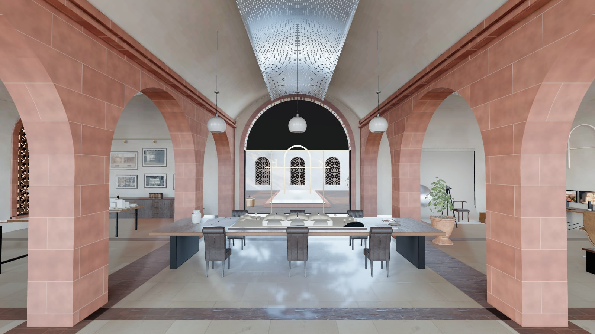
Overview — live
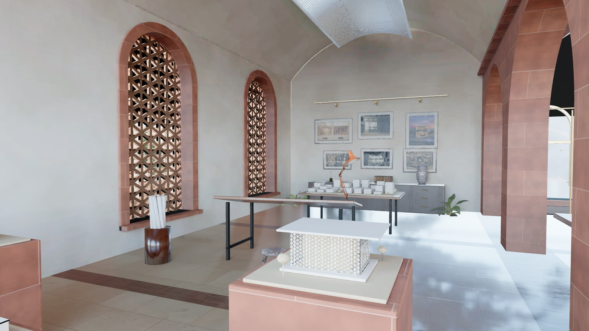
Left — live
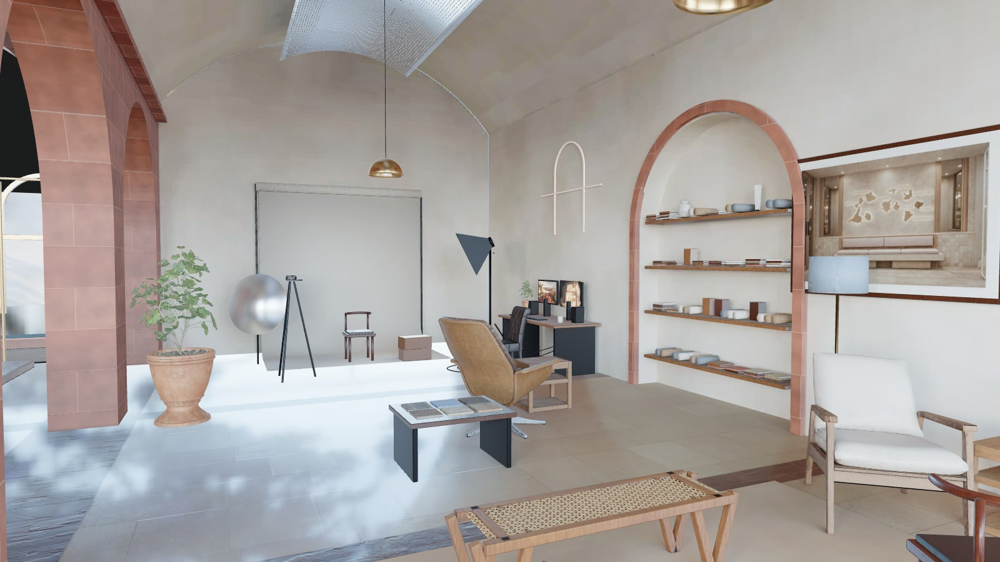
Right — live
Day
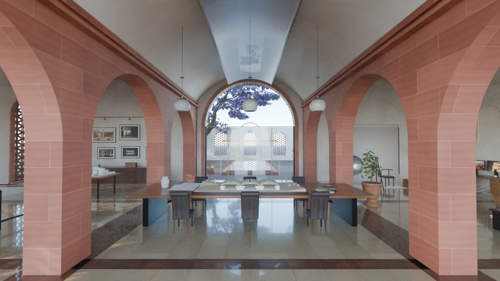
Overview — left arch: architecture · centre: the HoS story around the site model · right arch: furniture, interiors, content, filming
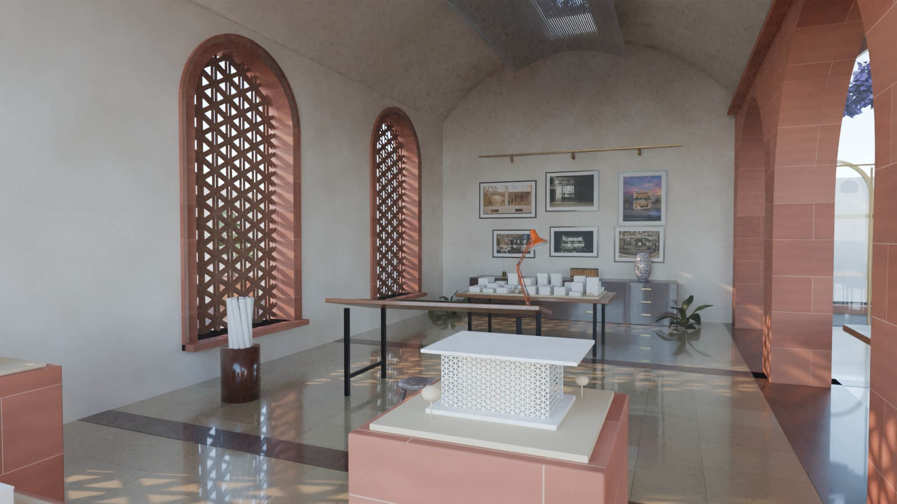
Left — architecture: jaali sunlight, study models on plinths, drafting table with real HoS plans, selected-work wall under a brass gallery rail
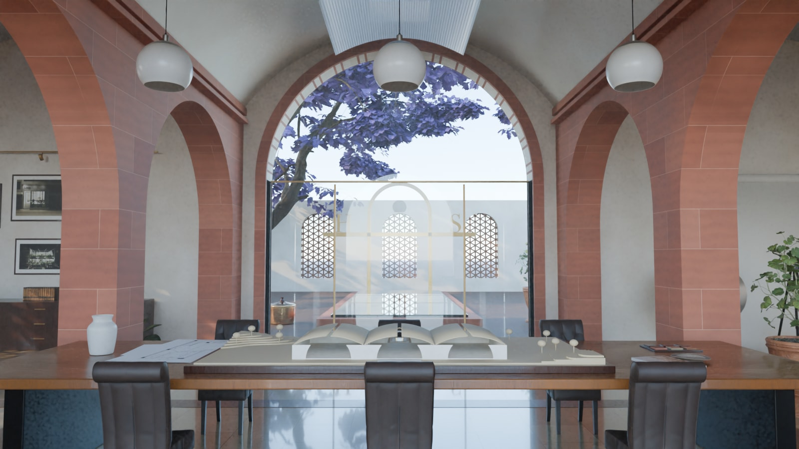
Centre — the long table with a big site model (courtyard building, three vaults, contoured terrain) and the glass arch onto the courtyard
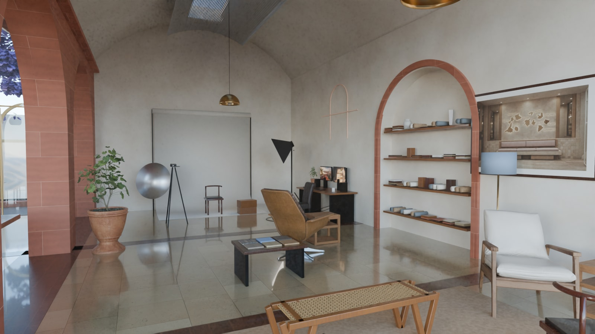
Right — oak and cane bench, sheesham chairs, the armchair in cream bouclé, material library niche, content desk, filming set
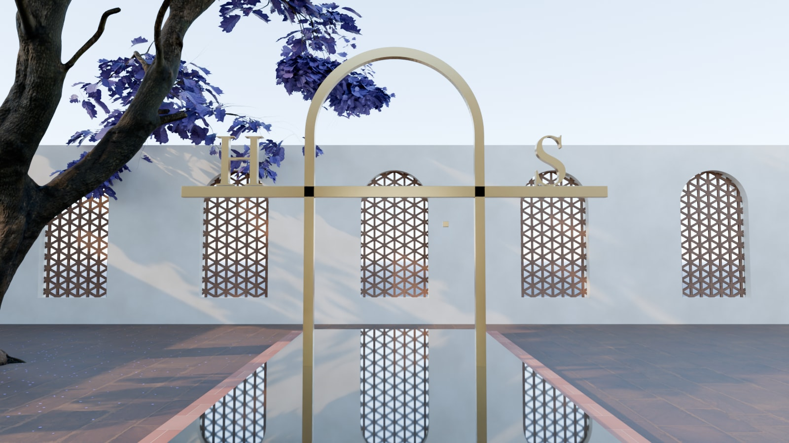
Courtyard — reflecting pool, jacaranda in bloom, the brass HoS gateway
Night
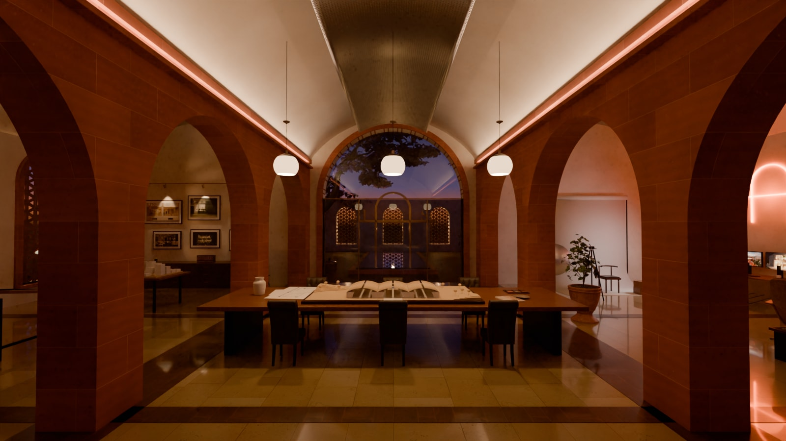
Overview — blue hour outside; cove light washes the vaults, opal globes over the table
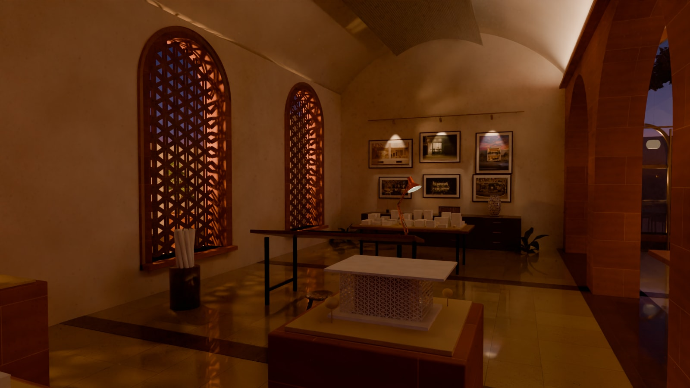
Left — garden lights throw the jaali pattern inward; gallery spots on the selected work
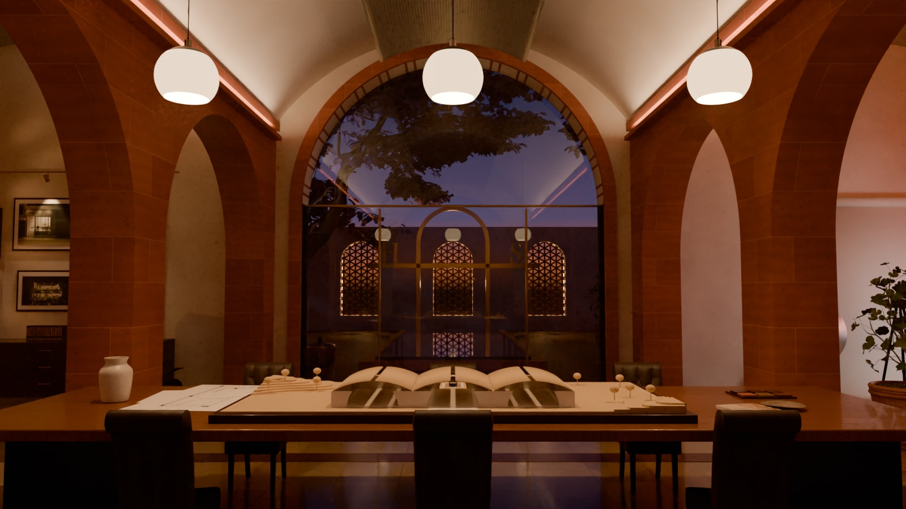
Centre — the table under the globes, the courtyard glowing beyond
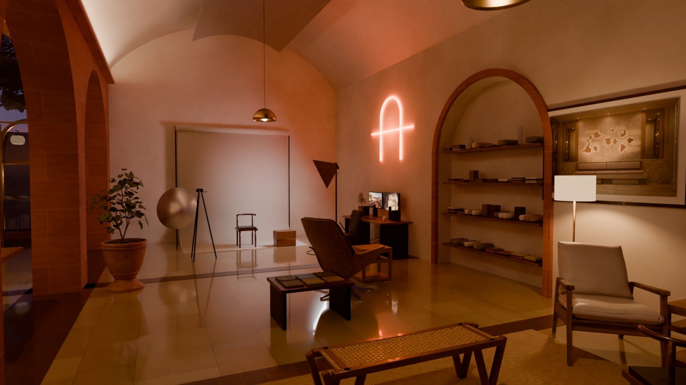
Right — brass domes and the floor lamp; the orange HoS neon on
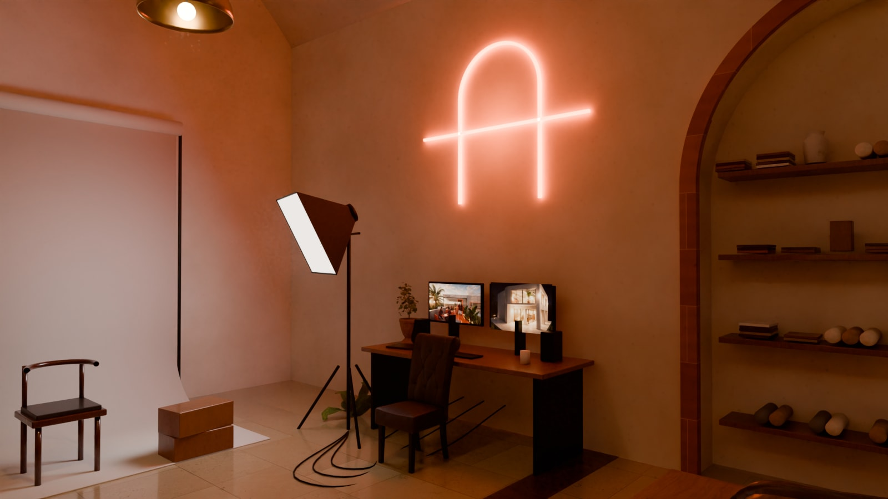
Content & filming — neon sign, monitors, softbox on the set
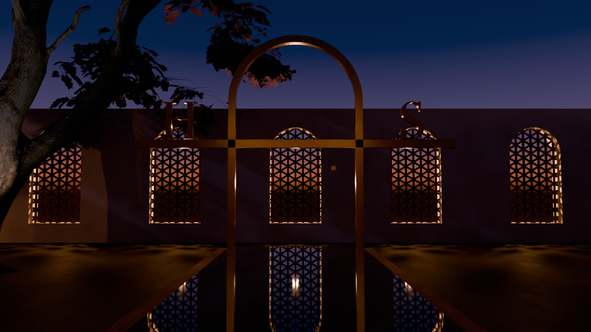
Courtyard — back-lit jaali, the jacaranda uplit, the gateway grazed with light